Brand Strategy · Visual Identity · Art Direction
Nazar
Be heard. Not just seen.
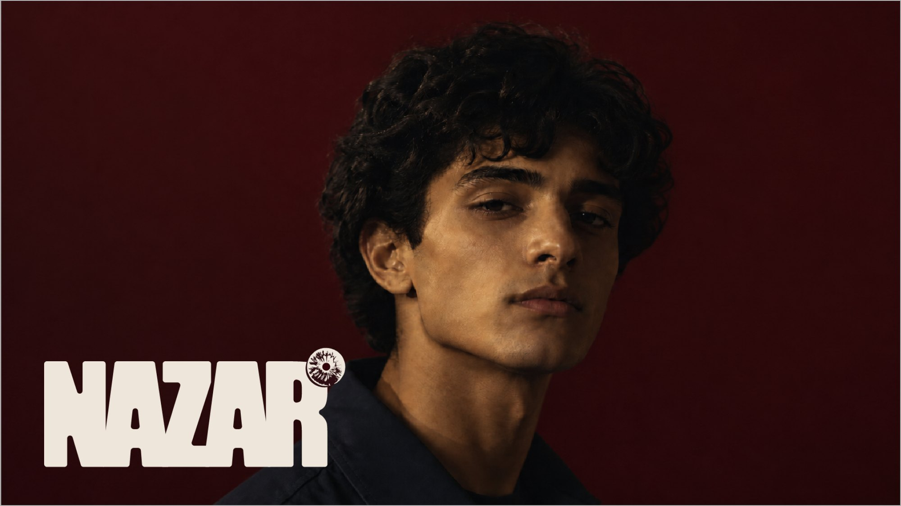
Raise your hand if you’ve ever said “haan haan, sun raha hoon” without listening at all.
The brief
A luxury brand for human attention.
What I had to deliver
A future where focused human attention is so scarce it becomes a luxury. A brand that lets you reserve and exchange it.
How I read it
Not a productivity problem. A human one. We need to be seen and chosen, and that need has a darker side. So the identity had to feel inviting and subtly unsettling at the same time.
What I looked at first
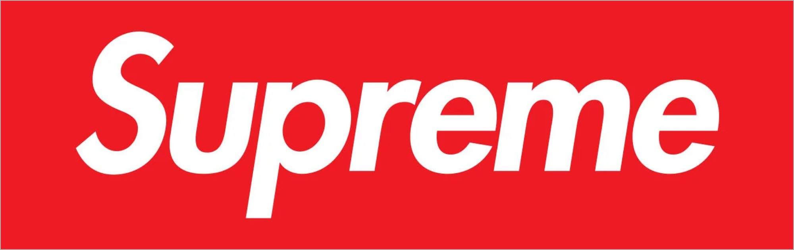
Supreme once sold a brick. It sold out.
What I noticed
The value isn’t in the product. It’s in the access. The harder something is to get, the more you want it.
What I took from it
Treat attention as limited. Being chosen is the whole point. Exclusivity, demand and the desire to be picked became part of the brand’s psychology, not just its marketing.
Choosing the name
Why Nazar Nazar is the gaze: being noticed, being chosen. Nazar is also the evil eye: attention that’s too much. One word, holding both sides of my rule.
Choosing the tagline
Why this one It argues with the name, on purpose. Nazar is about being seen — but being seen is cheap now: likes, views, followers.
10,000 followers will see you. Maybe two will hear you.
Mood board
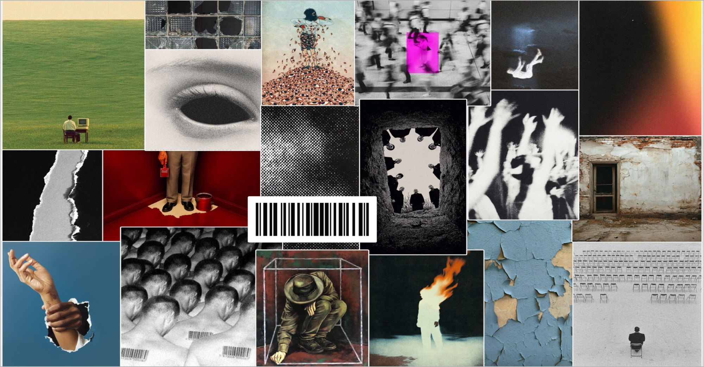
What this told me Observed, desired, slightly uncomfortable. Three things carried over into the work itself:
- Gazethe eye in the mark
- Isolationa single face in the ads
- Contrastmaroon on cream, a real iris on flat type
Exploring the mark
Six ways to put a gaze in the name. Each one had to earn the eye, not just wear it.


The shortlist
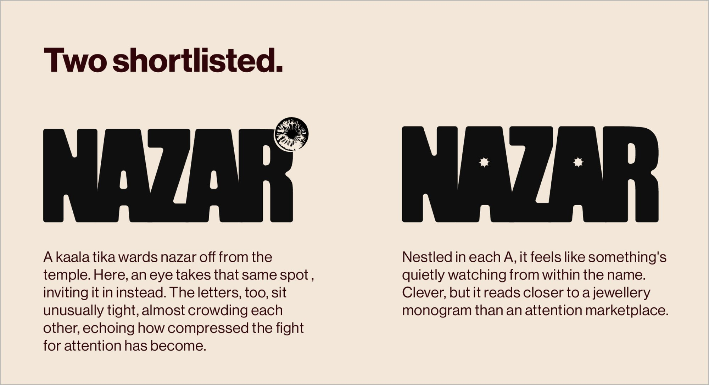
The shortlist test gaze · intensity · distinct · works as an app icon
Why the stars lost
For two days I was in love with them. Then I stepped back. It looked like it belonged on a jewellery box. Decoration, not meaning.
Why the temple eye won
The only one with a cultural reason to sit exactly where it sits.
Both put an eye in the name. Only one gave the name a reason to have an eye there.
The final mark
Our mothers put a small black dot on our temples so nobody would look at us too much. It’s protection.
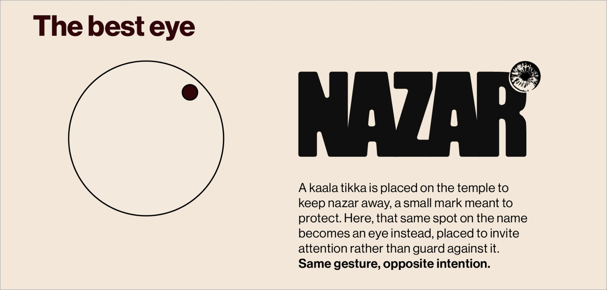

Colour and typography
No black and gold. That’s every luxury brand.
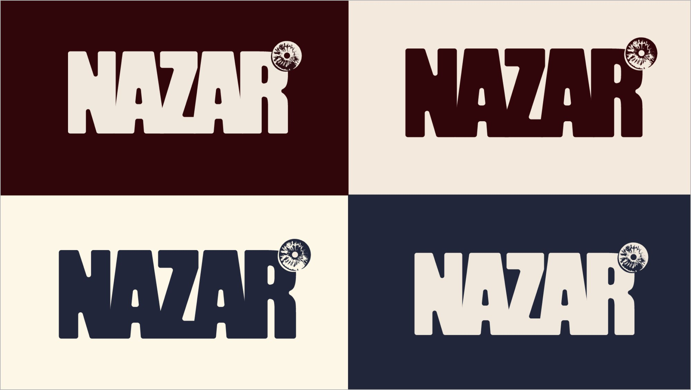
- Maroon #31060a Luxury weight without the cliché. Warm, intimate, close to dried kumkum.
- Cream #f3e9dd The inviting side. Soft, premium-paper warmth.
- Ivory #fdf7e7 A brighter light ground, paired with navy.
- Navy #21263a Serious, after-dark moments.
Always one dark and one light: 15:1 and 14:1 contrast. Maroon and navy never touch — they sit at 1.2:1.
Typography
The logo is the drama queen. The type stays quiet.
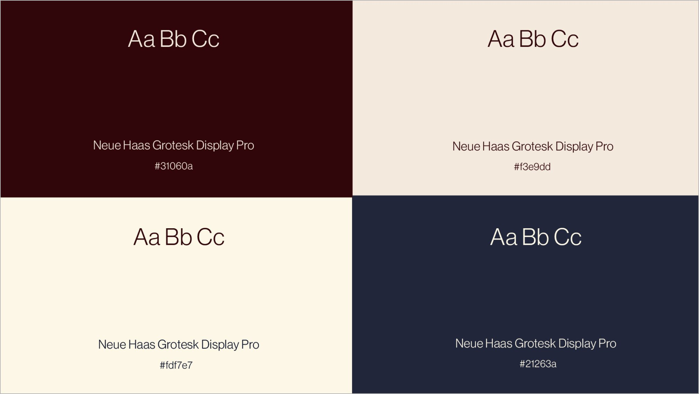
Neutral on purpose
The mark carries all the emotion, so the type doesn’t compete for it.
Display cut
Neue Haas Grotesk Display Pro — editorial and premium at large sizes.
Old ritual, modern type
An old belief, packaged as a new platform.
Logo lockups
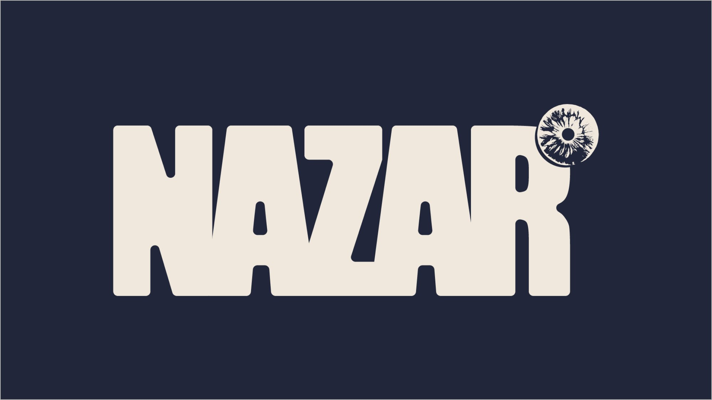
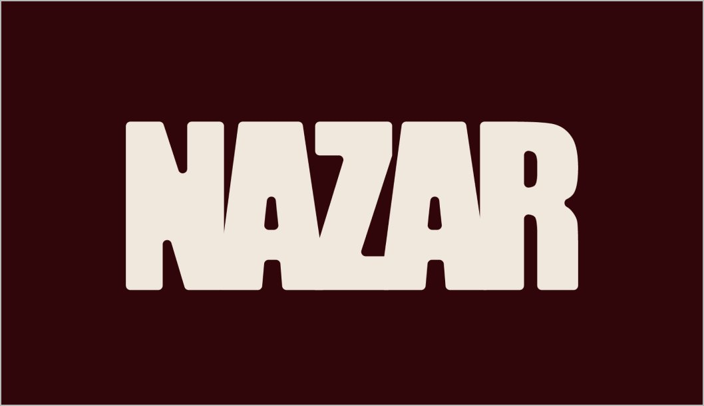
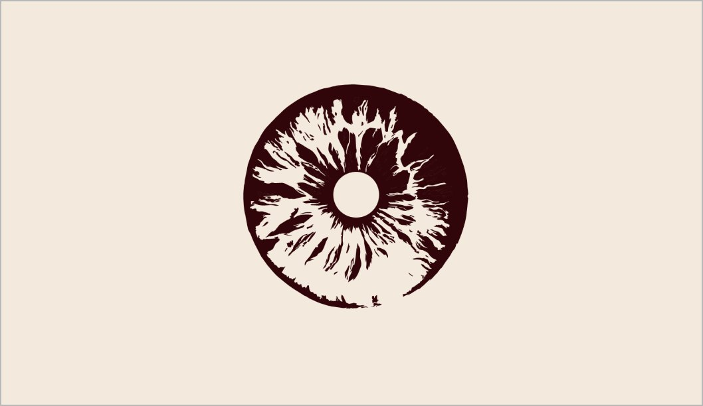
Why the eye is rationed It is held back in formal use. Scarce, and only when it matters — just like attention.
The brand in use
“Lagne do.” Flipping nazar na lage: let the gaze land.
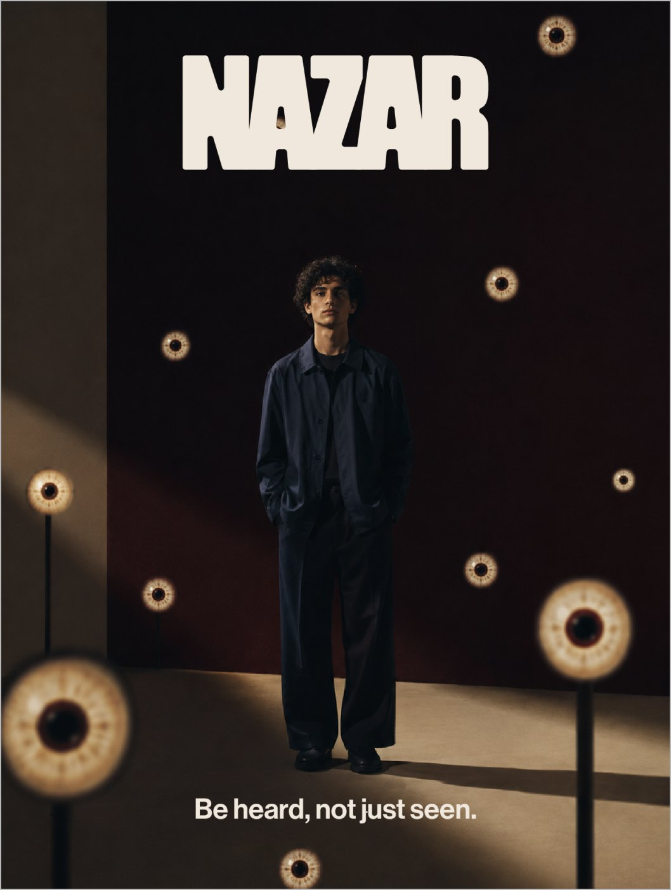
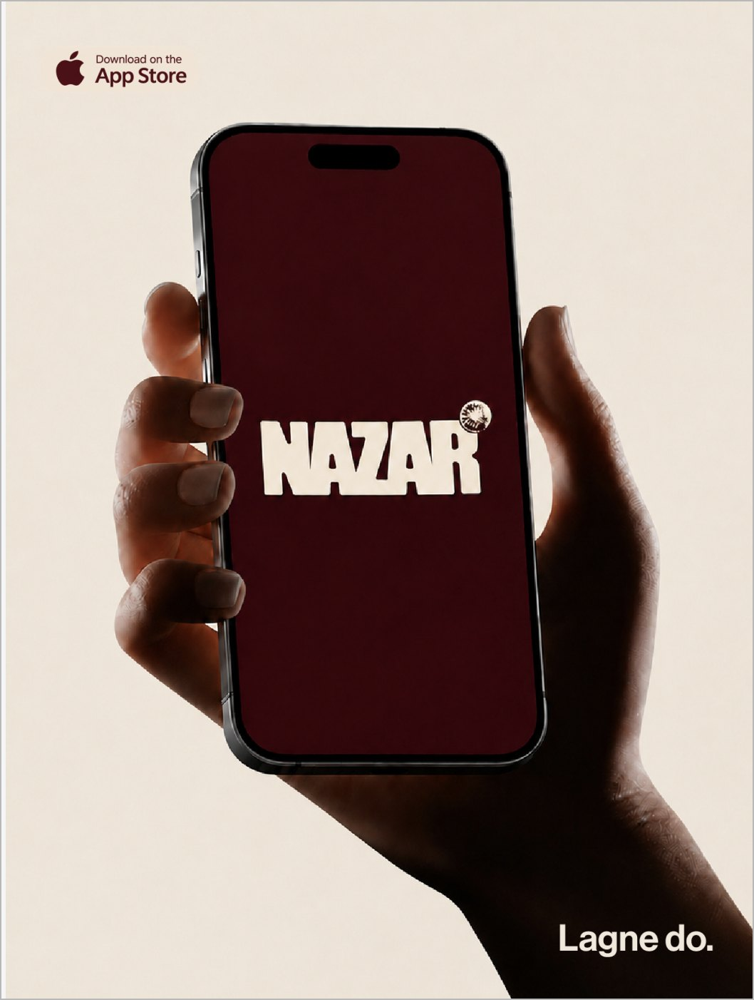
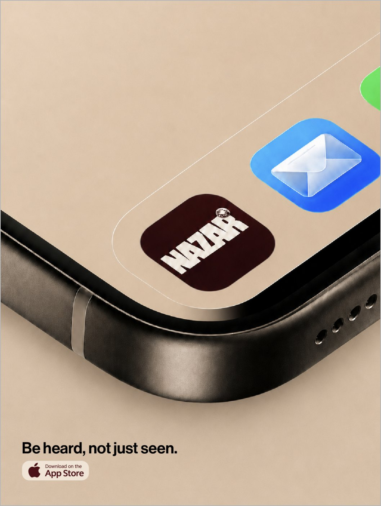
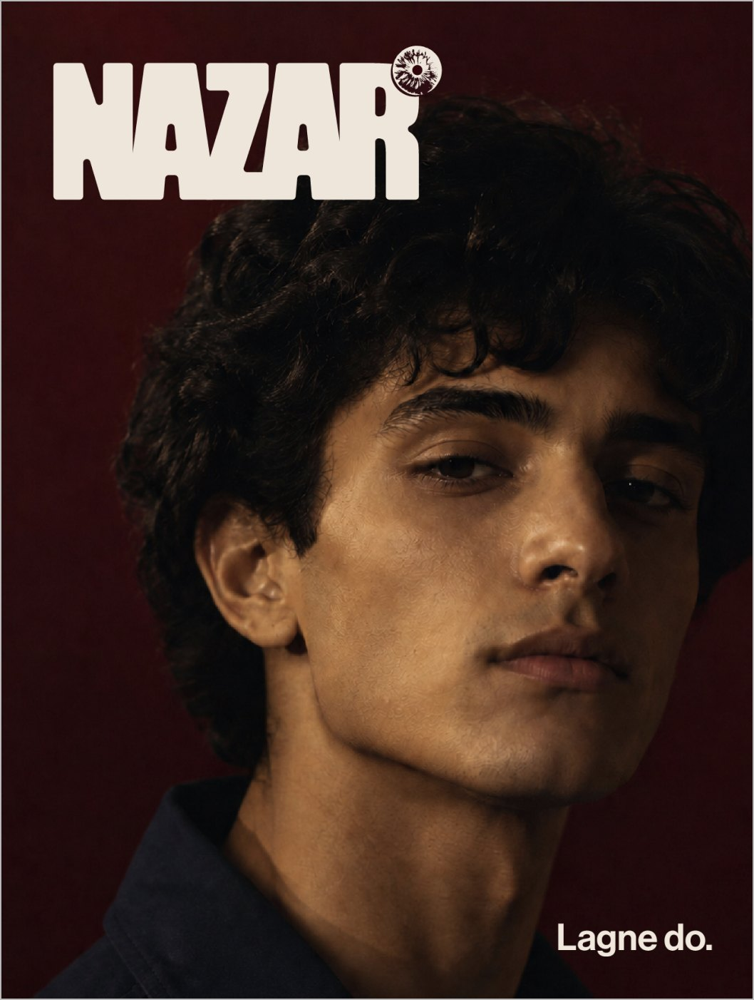
Once you’ve paid for attention, you obviously want people to see you carrying it.
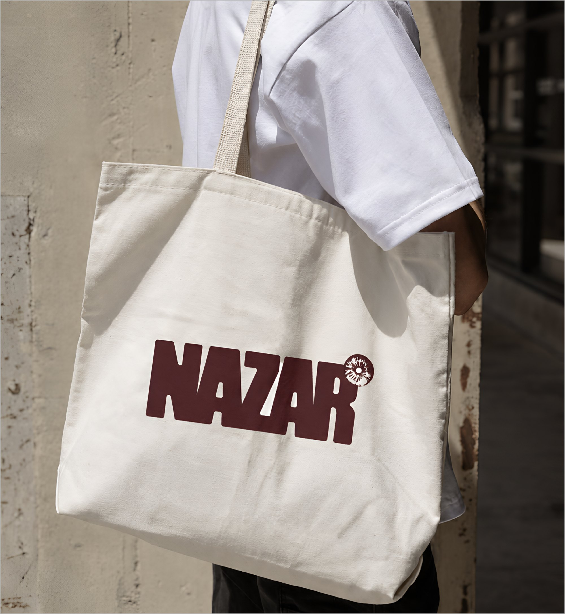
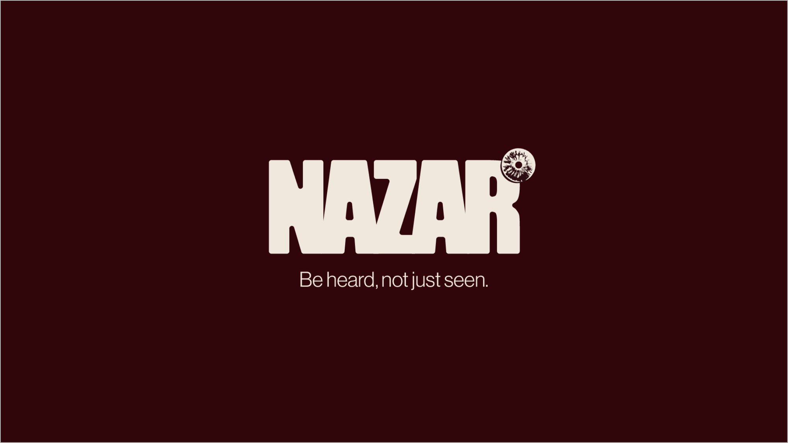
And I hope I was being heard, not just seen.
Back to all projects